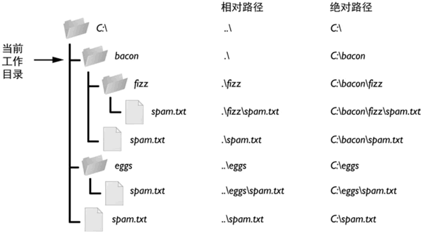

Python绝对路径和相对路径详解
什么是当前工作目录
每个运行在计算机上的程序，都有一个“当前工作目录”（或 cwd）。所有没有从根文件夹开始的文件名或路径，都假定在当前工作目录下。在 Python 中，利用 os.getcwd() 函数可以取得当前工作路径的字符串，还可以利用 os.chdir() 改变它。例如，在交互式环境中输入以下代码：注意，虽然文件夹是目录的更新的名称，但当前工作目录（或当前目录）是标准术语，没有当前工作文件夹这种说法。
>>> import os
>>> os.getcwd()
'C:\\Users\\mengma\\Desktop'
>>> os.chdir('C:\\Windows\\System32')
>>> os.getcwd()
'C:\\Windows\\System32'
需要注意的是，如果使用 os.chdir() 修改的工作目录不存在，Python 解释器会报错，例如：
>>> os.chdir('C:\\error')
Traceback (most recent call last):
File "<pyshell#6>", line 1, in <module>
os.chdir('C:\\error')
FileNotFoundError: [WinError 2] 系统找不到指定的文件。: 'C:\\error'
什么是绝对路径与相对路径
明确一个文件所在的路径，有 2 种表示方式，分别是：- 绝对路径：总是从根文件夹开始，Window 系统中以盘符（C：、D：）作为根文件夹，而 OS X 或者 Linux 系统中以 / 作为根文件夹。
- 相对路径：指的是文件相对于当前工作目录所在的位置。例如，当前工作目录为 "C:\Windows\System32"，若文件 demo.txt 就位于这个 System32 文件夹下，则 demo.txt 的相对路径表示为 ".\demo.txt"（其中 .\ 就表示当前所在目录）。
在使用相对路径表示某文件所在的位置时，除了经常使用 .\ 表示当前所在目录之外，还会用到 ..\ 表示当前所在目录的父目录。

图 1 相对路径和绝对路径
以图 1 为例，如果当前工作目录设置为 C:\bacon，则这些文件夹和文件的相对路径和绝对路径，就对应为该图右侧所示的样子。
Python处理绝对路径和相对路径
Python os.path 模块提供了一些函数，可以实现绝对路径和相对路径之间的转换，以及检查给定的路径是否为绝对路径，比如说：- 调用 os.path.abspath(path) 将返回 path 参数的绝对路径的字符串，这是将相对路径转换为绝对路径的简便方法。
- 调用 os.path.isabs(path)，如果参数是一个绝对路径，就返回 True，如果参数是一个相对路径，就返回 False。
- 调用 os.path.relpath(path, start) 将返回从 start 路径到 path 的相对路径的字符串。如果没有提供 start，就使用当前工作目录作为开始路径。
- 调用 os.path.dirname(path) 将返回一个字符串，它包含 path 参数中最后一个斜杠之前的所有内容；调用 os.path.basename(path) 将返回一个字符串，它包含 path 参数中最后一个斜杠之后的所有内容。
在交互式环境中尝试上面提到的函数：
>>> os.getcwd()
'C:\\Windows\\System32'
>>> os.path.abspath('.')
'C:\\Windows\\System32'
>>> os.path.abspath('.\\Scripts')
'C:\\Windows\\System32\\Scripts'
>>> os.path.isabs('.')
False
>>> os.path.isabs(os.path.abspath('.'))
True
>>> os.path.relpath('C:\\Windows', 'C:\\')
'Windows'
>>> os.path.relpath('C:\\Windows', 'C:\\spam\\eggs')
'..\\..\\Windows'
>>> path = 'C:\\Windows\\System32\\calc.exe'
>>> os.path.basename(path)
'calc.exe'
>>> os.path.dirname(path)
'C:\\Windows\\System32'
注意，由于读者的系统文件和文件夹可能与我的不同，所以读者不必完全遵照本节的例子，根据自己的系统环境对本节代码做适当调整即可。
除此之外，如果同时需要一个路径的目录名称和基本名称，就可以调用 os.path.split() 获得这两个字符串的元组，例如：
>>> path = 'C:\\Windows\\System32\\calc.exe'
>>> os.path.split(path)
('C:\\Windows\\System32', 'calc.exe')
同时，如果提供的路径不存在，许多 Python 函数就会崩溃并报错，但好在 os.path 模块提供了以下函数用于检测给定的路径是否存在，以及它是文件还是文件夹：
- 如果 path 参数所指的文件或文件夹存在，调用 os.path.exists(path) 将返回 True，否则返回 False。
- 如果 path 参数存在，并且是一个文件，调用 os.path.isfile(path) 将返回 True，否则返回 False。
- 如果 path 参数存在，并且是一个文件夹，调用 os.path.isdir(path) 将返回 True，否则返回 False。
下面是在交互式环境中尝试这些函数的结果：
>>> os.path.exists('C:\\Windows')
True
>>> os.path.exists('C:\\some_made_up_folder')
False
>>> os.path.isdir('C:\\Windows\\System32')
True
>>> os.path.isfile('C:\\Windows\\System32')
False
>>> os.path.isdir('C:\\Windows\\System32\\calc.exe')
False
>>> os.path.isfile('C:\\Windows\\System32\\calc.exe')
True
关注公众号「站长严长生」，在手机上阅读所有教程，随时随地都能学习。内含一款搜索神器，免费下载全网书籍和视频。

微信扫码关注公众号